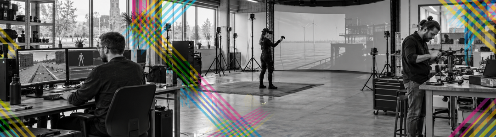
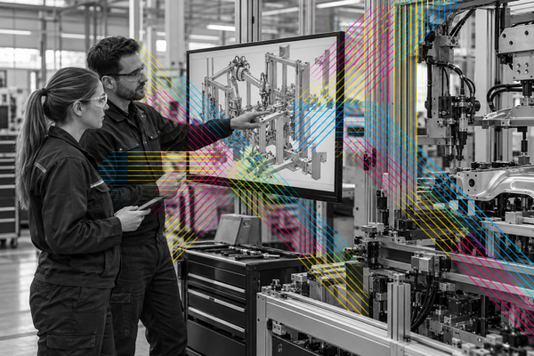

Trainen & simuleren
Oefen complexe of risicovolle situaties veilig, herhaalbaar en dichter bij de werkplek.

Immersive experiences · Noord-Nederland
IX Collab Noord verbindt organisaties met makers, onderzoekers, onderwijs, talent en faciliteiten. Zo wordt het eenvoudiger om te ontdekken wat IX kan betekenen en samen nieuwe toepassingen te verkennen.
Eerst de mogelijkheid
Immersive experiences, kortweg IX, zijn ervaringen waarin digitale en fysieke werelden in elkaar overlopen. Denk aan virtual en augmented reality, simulaties, digital twins, immersive audio en sensortechnologie.
IX draait niet in de eerste plaats om technologie. Het gaat om wat mensen ermee kunnen doen: ervaren, oefenen, begrijpen, ontwerpen en samenwerken op manieren die eerder niet mogelijk waren.

Begin bij de vraag
Je hoeft nog niet te weten welke technologie je nodig hebt. Een goed vraagstuk is genoeg om te beginnen.
Oefen complexe of risicovolle situaties veilig, herhaalbaar en dichter bij de werkplek.
Maak toekomstige plannen en abstracte informatie ervaarbaar voordat besluiten vallen.
Ondersteun therapie, vaardigheidstraining en zorg op afstand met gerichte ervaringen.
Test processen, leg vakkennis vast en ontdek verbeteringen vóór de fysieke aanpassing.
Ontwikkel nieuwe vormen van vertellen, luisteren, meemaken en publieksinteractie.
“Hoe kunnen we mensen beter trainen zonder dat iedereen steeds naar één centrale locatie reist?”
Verken deze vraag
De regionale opgave
Noord-Nederland loopt vooruit op ontwikkelingen die later op veel meer plekken voelbaar worden: vergrijzing, een afnemend arbeidsaanbod en toenemende druk op voorzieningen. Tegelijk groeit de behoefte aan mensen in zorg, techniek, IT en duurzame energie.
IX kan helpen diensten bereikbaar te houden, professionals dichter bij huis op te leiden, processen veiliger te maken en plannen begrijpelijk te presenteren. Het biedt bovendien kansen om talent, ondernemerschap en hoogwaardige werkgelegenheid in de regio te versterken.
De toegangspoort
IX Collab Noord is geen nieuw gebouw waarin alle technologie wordt verzameld. Het is een regionaal ecosysteem dat bestaande kennis, makers, onderzoekers, opleidingen, apparatuur en praktijkvragen met elkaar verbindt.
Een klein kernteam werkt als innovation broker: het helpt vragen te verhelderen, brengt de juiste partijen bij elkaar en maakt experimenten en demonstratieprojecten mogelijk.
Samen onderzoeken waar de echte behoefte en mogelijke waarde zit.
De juiste makers, onderzoekers, studenten, opleidingen en faciliteiten koppelen.
Van eerste verkenning naar prototype, demonstratie of praktijkproef.
Leren van projecten en inzichten delen met het bredere ecosysteem.
Van idee naar vervolg
Een lichte route die ruimte laat om te leren. Niet ieder vraagstuk hoeft meteen een volledig project te worden.
Een organisatie brengt een uitdaging, kans of eerste ingeving in.
We onderzoeken of en waar IX betekenis kan hebben.
Passende kennis, mensen, technologie en faciliteiten komen samen.
We maken een prototype, demonstratie of praktijkproef.
We verzamelen wat werkt en maken kennis breder bruikbaar.
Een kansrijk resultaat krijgt een passend vervolg.
Eén netwerk
IX-vraagstukken zijn technisch, menselijk, organisatorisch én inhoudelijk. Juist de combinatie maakt het verschil.
Ik heb een vraagstuk
Organisaties met maatschappelijke, economische of professionele uitdagingen waarvoor IX mogelijk iets kan betekenen.
Breng je vraag inIk maak IX
Bedrijven, ontwerpers en creatieve technologische professionals die toepassingen ontwerpen en ontwikkelen.
Sluit aan als makerIk ontwikkel kennis
Onderzoekers die werken aan technologie, ontwerp, gebruik, impact en implementatie van IX.
Verbind je onderzoekIk leid talent op
Mbo-, hbo- en wo-instellingen die talent opleiden en studenten verbinden aan authentieke vraagstukken.
Doe mee met onderwijsVerspreid aanwezig
Het netwerk verbindt bestaande labs, apparatuur, expertise, onderzoekers, makers en opleidingen in Noord-Nederland. Daardoor ontstaat samen een grotere infrastructuur dan iedere partij afzonderlijk kan aanbieden.
De kracht zit niet in één technologie of locatie, maar in het vinden van de combinatie die bij het vraagstuk past.

Verspreid over onder meer Groningen, Leeuwarden, Drachten en Terschelling. Het aanbod groeit mee met het netwerk.
Samen leren door te doen
Deze projectrichtingen komen uit de plannen voor IX Collab Noord en zijn bedoeld om praktijkvragen, talent en expertise samen te brengen.

Projectrichting · in ontwikkeling
VR-training rond operatiekamers en behandelkamers, ontwikkeld in een realistische zorgcontext.

Projectrichting · in ontwikkeling
Assemblageprocessen zichtbaar en testbaar maken, met aandacht voor verbetering en het behouden van vakkennis.

Projectrichting · in ontwikkeling
Toekomstige ruimtelijke situaties ervaarbaar maken voordat er besluiten vallen.
Ontmoeten en delen
Daarom maken bijeenkomsten, demonstraties en publicaties deel uit van IX Collab Noord. De eerste data en locaties worden toegevoegd zodra het programma is bevestigd.
Houd mij op de hoogteDoorlopend
Verdieping
Jaarlijks
Om te bewaren
Begin bij jouw vraag
Heb je een vraagstuk, expertise of idee? Je hoeft nog niet precies te weten wat je nodig hebt. Dat zoeken we samen uit.
Voor vragen overprojecten, expertise, faciliteiten, onderzoek, onderwijs en aansluiten bij het netwerk.
Goed om te weteneen eerste verkenning begint bij de behoefte, niet bij een voorgeschreven technologie.